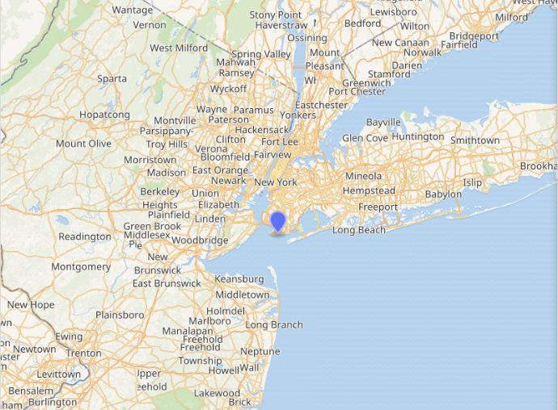

chapter5.1--handout
Background Information
Coney Island (康尼岛)
Let’s go to Coney Island, old sport. In my car. （咱俩到康尼岛去玩吧，老兄。坐我的车子去。）
康尼岛（Coney Island，又译科尼岛）是位于美国纽约市布鲁克林区的半岛，原本为一座海岛，是长岛最南端的一片沙洲，约长四英里、宽一点五英里。

在20世纪初，通过填埋与长岛其他地区相连。半岛的住宅区西部是一个由6万人组成的社区，西边是海门，东面是布莱顿海滩和曼哈顿海滩，南面是下湾，北面是格雷夫森德。其面向大西洋的海滩是美国知名的休闲娱乐区域。
康尼岛最初是殖民城镇Gravesend的一部分。到了19世纪中期，它成了一个海滨度假胜地（seaside resort），到了19世纪末，游乐园也在这个地方建成。
这些景点在20世纪上半叶达到历史最高峰，在第二次世界大战后受到欢迎，并且经过多年的忽视。随着2001年MCU公园（a minor league baseball stadium）的开放以及2010年的几个游乐设施，该地区焕发了活力。
Castle Rackrent (《拉克伦特堡》)
“Or why did I have to come alone?”“That’s the secret of Castle Rackrent.”（"要不然为什么我非得一个人来呢？" "那是拉克伦特堡的秘密。”）
Castle Rackrent（《拉克伦特堡》，又译《雷克兰特古堡》）是英国作家Maria Edgeworth于1800年出版的短篇小说，通常被认为是第一部历史小说，第一部英文地域小说。也被认为是第一部大庄园小说和第一部传奇小说。
该作品是第一个在小说中设置既有角色又有旁观解说者人物的。柯克帕特里克说评价道：“既借鉴了传统文学的类型，又不相似于它们中的任何一个。”
《拉克伦特堡》小说的背景设定在1782年宪法之前，拉克伦特家族的四代继承人连续的不善经营使得家业在讲述者狡猾的儿子杰克·奎尔克的诡计下被瓦解侵占。
在小说的最后，Jason和已经康复和Lay Condy因庄园的头衔而告上法庭。有些人说Jason会得到这片土地，另一些人则说Lady Condy会胜出。而结果只能由Thady去猜测了，也留给读者一个开放式结尾。
尼克借《拉克伦特堡》小说与黛西打了个哑谜，暗示她猜不到请她过来的目的究竟是什么。
Vocabulary
ragged
adj. 衣衫褴褛的（old and torn）
参差不齐的，凹凸不平的（having an outline, an edge or a surface that is not straight or even）
原文：We both looked at the grass — there was a sharp line where my ragged lawn ended and the darker, well-kept expanse of his began.
我们俩都低头看了看草地——在我的乱蓬蓬的草地和他那一大片剪得整整齐齐的深绿色草坪之间有一条很清楚的分界线。
💧ragged 在这里形容Nick家的草坪因为没有修剪而一片参差不齐的样子；这个词来源于rag, 表示“破布，抹布”，所以in rags可以指“衣衫褴褛”（相当于ragged）；以及from rags to riches就是指像Gatsby这样的白手起家。
vacant
adj. 空缺的（empty; not being used）
茫然的（showing no sign that the person is thinking of anything）
原文：Gatsby looked with vacant eyes through a copy of Clay’s Economics...
盖茨比心不在焉地翻阅着一本克莱的《经济学》……
💧vacant 最常见的义项是“空缺的”，比如：The position of headmaster falls vacant.
校长职位正处于空缺中。
💧这里vacant形容人的表情“茫然的，空洞的”（void of thought or emotion）, 相当于blank.
Crush Your Problems
- At first I thought it was another party, / a wild rout / that had resolved itself into / “hide-and-go-seek” or “sardines-in-the-box” / with all the house / thrown open to the game.
起初我还以为又是一次晚会，一次狂欢的盛会，整个别墅统统敞开，好让大家做游戏，玩捉迷藏或"罐头沙丁鱼"。
💧表达精讲
①rout 指“时髦的聚会”（a fashionable gathering）;
②resolve oneself into 表示“演变成某事物”（to gradually change into something else）;
③hide-and-go-seek and sardines-in-the-box 都是指“捉迷藏”；
④throw...open to 表示“对……开放（某地）”，比如：Plans have been announced to throw the Palace open to the public.
向公众开放宫殿的计划已经宣布了。
盖茨比的豪宅灯火通明，但又听不到一点声音，所以Nick用诙谐的语气说就好像来参加聚会的人都在玩捉迷藏一样。 - I realize now / that under different circumstances / that conversation / might have been one of the crises of my life. / But, because the offer was / obviously and tactlessly / for a service to be rendered, / I had no choice / except to cut him off there.
我现在认识到，如果当时情况不同，那次谈话可能会是我一生中的一个转折点，但是，因为这个建议说得很露骨，很不得体，明摆着是为了酬谢我给他帮的忙，我别无选择，只有当场把他的话打断。
💧表达精讲
①under different circumstances 指“在不同情况下”，也就是如果Gatsby不是为了酬谢Nick而提出要介绍他做点小生意；
②might have been one of the crises of my life, might have been是过去时的虚拟语气，还原成完整句子是：If it had been under different circumstances, that conversation might have been one of the crises of my life.
③obviously and tactlessly “直白而缺乏策略地”，这里说明Gatsby是一个不善社交并且不懂圆滑的人；
④for a service to be rendered “为了（酬谢）某个帮忙”，to be rendered是不定式作后置定语修饰service; render a service to sb就是指“帮某人的忙”，相当于do a favor to sb.
⑤have no choice except to do “别无选择，只能……”，相当于have no choice but to do. - The exhilarating ripple of her voice / was a wild tonic in the rain. / I had to follow the sound of it / for a moment, / up and down, / with my ear alone, / before any words came through.
她那悠扬的嗓音在雨中听了使人陶醉。我得先倾听那高低起伏的声音，过了一会儿才听出她所说的话语。
💧表达精讲
①the exhilarating ripple of her voice, a ripple of (laughter/applause) 表示“此起彼伏的(笑声/掌声)”，这里形容Daisy的声音不断在雨中回荡；exhilarating指“令人激动兴奋的”，和下文的tonic呼应（tonic表示something that makes one feel happy and energetic）;
②up and down 表示“上上下下，完全彻底地”（with regard to every detail, thoroughly）, 这里指全神贯注地悉心听Daisy的声音；
③come through 表示“到达，传来”（to become communicated）. - Gatsby, / pale as death, / with his hands plunged like weights / in his coat pockets, / was standing in a puddle of water / glaring tragically into my eyes.
盖茨比面如死灰，那只手像重东西一样揣在上衣口袋里，两只脚站在一摊水里，神色凄惶地瞪着我的眼睛。
💧句式拆解
这句话可以找出主干Gatsby was standing in a puddle of water后再分析其他成分。
💧表达精讲
①pale as death 是一句习语，和pale as a ghost意思一样，表示“脸色惨白”；
②with his hands plunged like weights in his coat pockets, plunge通常表示“（价格，比率）骤降”，这里形容Gatsby手插衣袋就像里面揣着（诸如哑铃的）重物；
③a puddle of water “水坑”；
④glaring tragically into my eyes “神色凄惶地瞪着我的眼睛”，现在分词作伴随状语；
tragically在这里有两层含义，一是“极度的悲伤”（involving extreme sorrow），二是“灾难性地，可怕地”（implying dreadful things）；这两种理解都暗示了Gatsby悲剧性的命运。 - With his hands still in his coat pockets / he stalked by me / into the hall, / turned sharply / as if he were on a wire, / and disappeared into the living-room.
他阔步从我身边跨过进门廊，手还揣在上衣口袋里，仿佛受牵线操纵似的突然一转身，走进起居室不见了。
💧表达精讲
①stalk 指“高视阔步地走”，by 表示“经过，从旁边”；
②as if he were on a wire 是虚拟语气，on a wire有两种理解：一是按照巫宁坤的译本解释为“像木偶被线操纵”（as if he were a puppet in a string），强调Gatsby动作的僵硬；另一种是指“像走在钢丝上的人”（as if he were walking on a tightrope），突显出他的小心翼翼。
Content Analysis
Nick和Jordan见完面后的晚上，他回到西卵发现Gatsby的豪宅灯火通明，但里面却一片寂静。Gatsby还十分殷勤地邀请他出去玩（很明显地不合时宜），最后Nick似乎察觉到了Gatsby的急不可待，于是马上提出要安排他和Daisy的见面。其实作者在多处细节都透露了Gatsby的急切，以及他如何尽力压制自己的冲动而不至于显得过于唐突，我们来看一看其中比较有意思的一处——
💧Gatsby is eager to show Daisy his mansion and wealth.
Evidence 1: Two o’clock and the whole corner of the peninsula was blazing with light, which fell unreal on the shrubbery and made thin elongating glints upon the roadside wires.
半夜两点钟了，而半岛的那整个一角照得亮堂堂的，光线照在灌木丛上好像是假的，又照在路旁电线上映出细细的一长条一长条的闪光。
当时已经夜深了，Gatsby却把所有房间的灯都打开，而在对Nick的解释中他则轻描淡写地说道自己只是随便打开几个房间的灯看一看（"I have been glancing into some of the rooms"）. 这一举动明显是因为他想引起住在对岸的Daisy的注意，但又因为太过急切而用力过猛，导致在旁人看来非常笨拙（awkward）.
Gatsby终于通过Nick取得了一次和Daisy见面的机会，因此他在每一个细节上都无比用心，包括请园工修剪Nick家的草坪，还把几乎一整个温室里的花都搬来了Nick家……但这些都无法掩藏他内心深处的惶恐和紧张，甚至还有点自卑（否则不会费尽心思地想要取悦Daisy）。Nick在环境描写和渲染上也使足了力气——
💧Clue 2: The surroundings add to the tension of the meeting.
Evidence 1: An hour later the front door opened nervously, and Gatsby, in a white flannel suit, silver shirt, and gold-colored tie, hurried in.
一小时以后，大门被人战战兢兢地打开，盖茨比一身白法兰绒西装，银色衬衫，金色领带，慌慌张张跑了进来。
Nick没有直接说Gatsby很紧张，而是写“大门被战战兢兢地打开”。也许是推门的速度很缓慢，中间还有停顿和迟疑，或者发出了嘎吱的声音……光是想到这个场景都让人不禁屏气凝神。
Evidence 2: Gatsby looked with vacant eyes...and peering toward the bleared windows from time to time as if a series of invisible but alarming happenings were taking place outside.
盖茨比心不在焉地翻阅着……并且不时朝着模糊的窗户张望，仿佛一系列看不见然而怵目惊心的事件正在外面发生。
房子外面当然没有什么骇人的事情发生，这里其实是反指Gatsby的内心世界正处在动荡不安中。他可能正预想这最坏的结果，或者是回忆起往事无法平复心情。
Evidence 3: Aware of the loud beating of my own heart I pulled the door to against the increasing rain.
我意识到自己的心也在扑通扑通跳。外面雨下大了，我伸手把大门关上。
Gatsby进门后转身径直走向起居室，马上这两位旧情人就要见面了。而此刻Nick也感觉到自己的心跳加速，而且外面的雨势越来越大了。这里不仅通过环境来烘托故事的高潮——Gatsby和Daisy的会面，还通过了其他人物的共情增加紧张气氛。
Today's Bonus
💧Small Jobs for Kids of All Ages 2美国小朋友做的“小兼职”
“I want to get the grass cut,” he said. （他勉强地说："我要让人把草地平整一下。"）
盖茨比对于和黛西的“重逢”何其在意啊，嫌弃上了尼克的草坪。读到这里我先想到了美国剪草坪的青少年们。在美国，很多孩子通过干家务活获得零用钱。除了修剪草坪，美国孩子还通过什么“零工”赚零用钱呢？
- Yard Work 庭院工作
如果孩子年纪还太小，不适合修剪草坪，他或许可以帮助房主在每年树叶长得很快的时候做其他的庭院工作：铺盖地膜、种植花卉或种子、拔除杂草。
- Paper Route 送报纸
对于早起的小孩子来说，最好的工作就是送早报。有时候觉得送一份日报太浪费时间，也有小孩子选择送周报的工作。
- Lifeguarding 救生员
喜欢游泳和在户外度过夏天的孩子，救生员是一份很棒的暑期工作。不过需要提前几个月获取相关信息：这些职位不仅很受欢迎，而且任何想找一份救生员工作的人都需要接受培训，并通过心肺复苏(CPR)的救生员课程。
- Lemonade Stand 柠檬水小摊
柠檬水小摊是小朋友们的一次有趣的商业冒险。未来的小企业家们也可以在他的岗位上销售其他饮料甚至零食。
- Babysitter 保姆工作
保姆工作全年都有，红十字会为11到15岁的孩子提供保姆课程，培训他们急救知识的几个组织之一。在做保姆之前，孩子需要足够成熟，能够应付小孩子。通常父母是其最好的评判者。
- Car Wash 洗车
小朋友们“经营”自己的洗车店也是零工的很好选择。这是一项能够享受户外的阳光，淋湿衣物，玩水龙带——而且不怕辛苦的工作。
- Dog Walker 遛狗
狗一年到头都需要外出锻炼，暑期孩子们有额外的时间和它们散步或玩耍。家里有宠物的孩子更有可能喜欢照料狗，任何一个年纪足够的孩子都可以做这项工作。
美国的孩子在成长期间会做诸如此类的社会实践，可能也是他们看起来较同龄人成熟的原因之一吧~